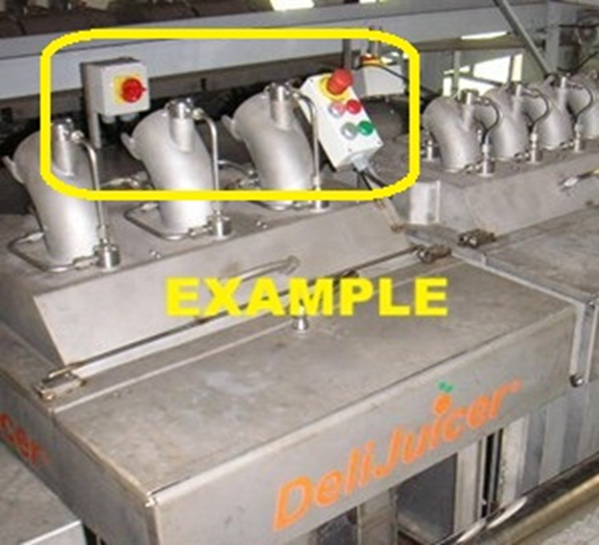

部件 of the 控制与电子 section. Local stand-alone controls, indicators, safety UI, and lockout/tagout.
简介
The machine must be operable as a stand-alone unit with local ON/OFF and run/stop controls. The UI should be easy-access at the top-front of the machine, with clear indicators for RUNNING/STOPPED and safety-open state. A rear lockout/tagout (LOTO) unit is required for service and seasonal teardown.
颜色说明与部件
UI components and intent.
颜色
部件
—
Top-front control unit — ON/START, OFF/STOP, E-STOP, RUNNING and STOPPED indicators.
—
Safety status indicator — "machine open" indicator when any lid interlock is open.
—
Rear LOTO unit — lockout/tagout isolation point accessible from the top-rear.
图示
Control panel concept and placement (photo/CAD snapshot).

图 1. Top-front control unit concept (photo).
1 / 1
建议补充图示（便于承包商理解）
补充图示: Panel face layout — exact button/indicator positions and labeling.